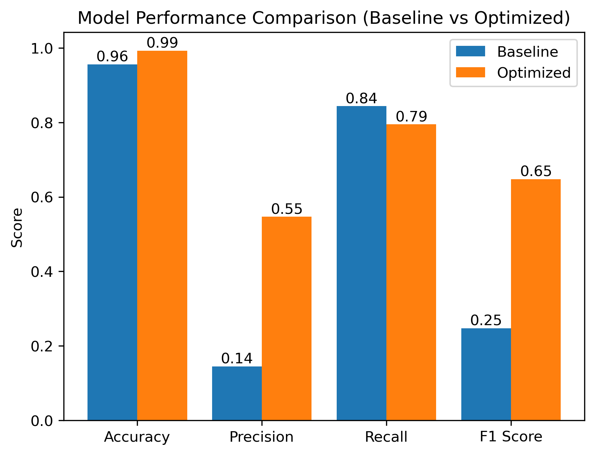
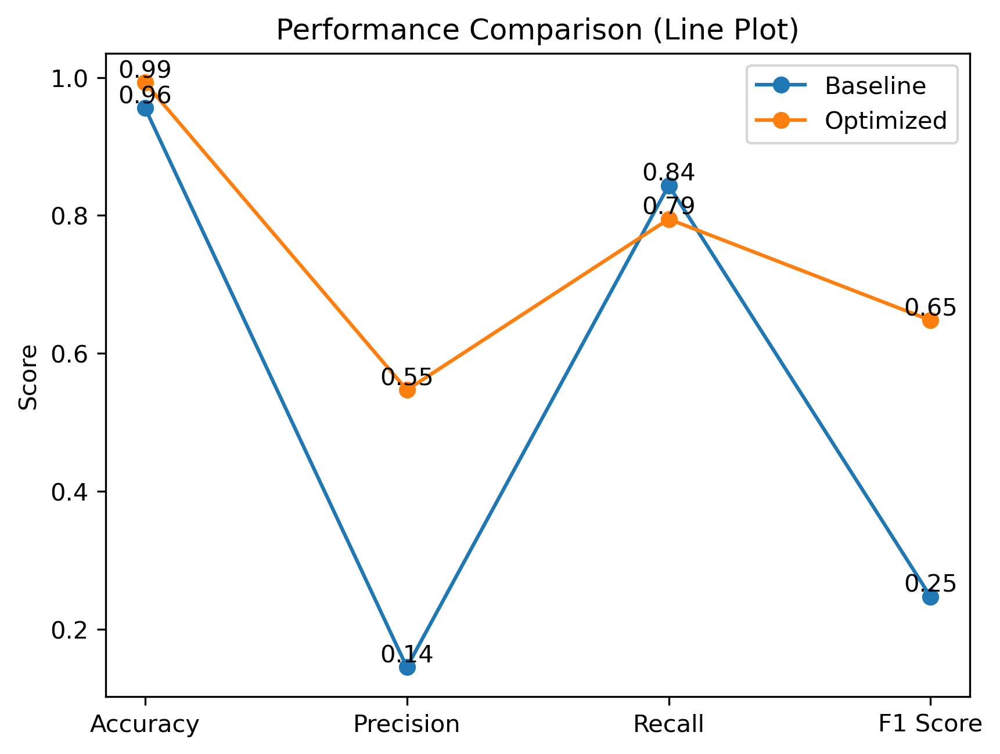
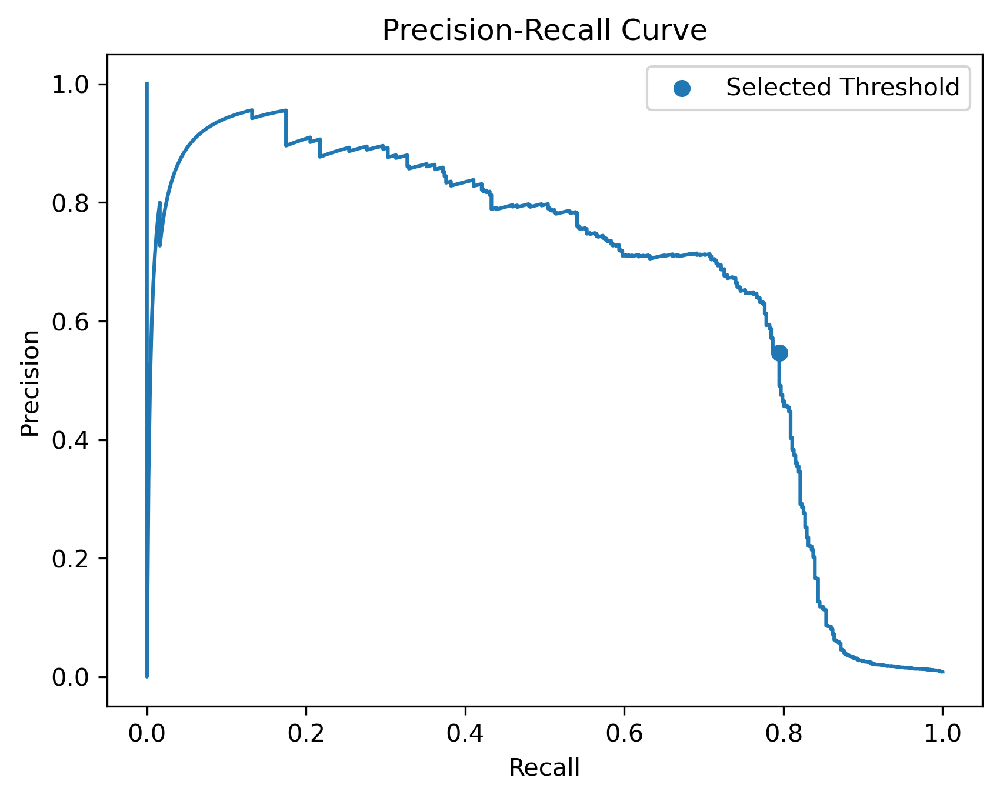
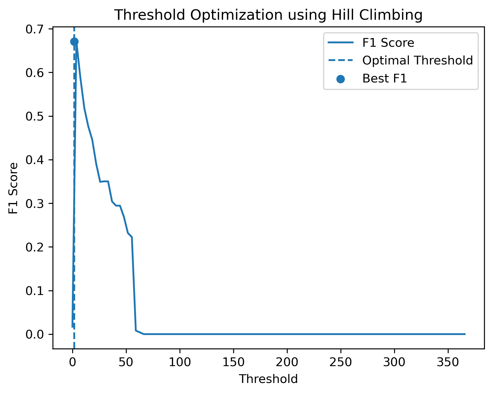
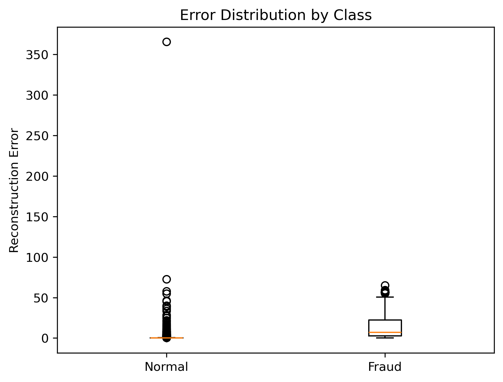

AI Project · Fraud Monitoring
AI-Based Anomaly Detection for Financial Fraud Monitoring
A hybrid AI system that uses an autoencoder to learn normal transaction behavior and hill climbing to optimize the fraud decision threshold.
Autoencoder
Anomaly Detection
Hill Climbing
Financial Fraud
Problem
Why this project matters
Online financial transactions are increasing rapidly, and traditional rule-based fraud detection systems can struggle to detect new or unusual fraud patterns. This project explores how deep learning and search optimization can work together to flag suspicious transactions more adaptively.
The goal was to develop a system that classifies selected transactions as Fraud or No Fraud using reconstruction error and an optimized threshold.
Approach
Hybrid AI Pipeline
The autoencoder learns patterns from normal financial transactions. When a transaction is difficult for the autoencoder to reconstruct, it receives a higher reconstruction error, which becomes the anomaly score. Hill climbing then searches for a threshold that improves the F1 score.
DataTransactions
AutoencoderLearn normal behavior
ErrorAnomaly score
Hill ClimbingFind threshold
DecisionFraud / No Fraud
Results
Baseline vs. Optimized Model
Optimization improved the model’s balance between false alarms and missed fraud. The optimized model increased precision and F1 score, while recall remained relatively strong.

Click to view full imageModel Performance Comparison
The optimized model improves accuracy, precision, and F1 score compared with the baseline model.

Click to view full imagePerformance Trend
The line plot highlights how optimization changes each metric across accuracy, precision, recall, and F1 score.

Click to view full imagePrecision–Recall Curve
This curve shows the trade-off between detecting fraud and reducing false alarms across thresholds.

Click to view full imageThreshold Optimization
Hill climbing searches for a threshold that maximizes the F1 score.

Click to view full imageError Distribution by Class
Fraud transactions generally show larger reconstruction errors than normal transactions.
Presentation
Project Presentation
The embedded slide deck below presents the full project summary, including the problem statement, solution pipeline, autoencoder approach, hill climbing optimization, model results, ethics, reflections, and team contributions.
Demo
Interactive Web Demo
I also built a browser-based demo that loads real transaction rows, runs the anomaly detection pipeline, compares the reconstruction error to the learned threshold, and displays a fraud/no-fraud decision.
Click to view full image
Demo Interface
The interface summarizes the model decision, reconstruction error, threshold comparison, model metrics, and selected transaction features.
Reflection
What I learned
This project showed why accuracy alone can be misleading in fraud detection. A model can appear highly accurate while still performing poorly on the minority fraud class. Using F1 score as the optimization target helped balance precision and recall, while the demo made the pipeline easier to explain to a non-technical audience.